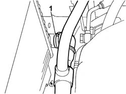
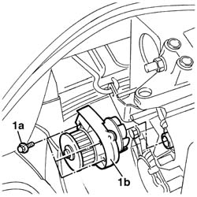
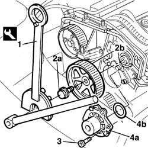
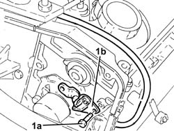
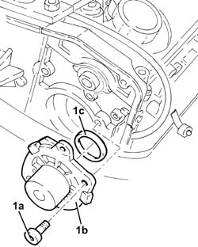
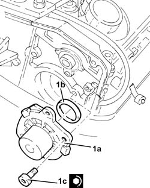
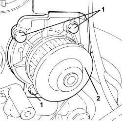

1088C14 water pump - r + r with drive belt removed
- Path
- Procedures > 10 ENGINE > 1088 ENGINE COOLING > 1088C WATER PUMP AND THERMOSTAT > 1088C14 water pump - r + r with drive belt removed
- Kind
- repair procedure (removal / refitting; the operation number is the code)
- Applies to
- engines: 1.2 8v, 1.4 8v, 1.9 JTD 8V, 1.9 DIESEL; all production periods
- Interactive page
- https://sloeber94.github.io/elrnDB-fDbl/en/#/2584307
Applies to: engines: 1.2 8v; all production periods
 Removing
Removing
 Refitting
RefittingPosition a suitable container for collecting the coolant.
1. Disconnect the lower radiator coolant outlet hose from the radiator.

Applies to: engines: 1.2 8v; all production periods
1. Undo the bolts (1a) and remove the coolant pump (1b).

Applies to: engines: 1.2 8v; all production periods
Refitting
RemovingFit the water pump tightening the fixing bolts to torque.
Fastening | Component | dia | Value (daNm) | |
|---|---|---|---|---|
- | Bolt | COOLANT PUMP | M6 | 1 |
Connect the coolant outlet sleeve from the radiator and secure with the retaining collar.
Applies to: engines: 1.9 DIESEL; all production periods
Removing
Refitting1. Use the tool to lock the pulley.
2. Undo the fixing bolt (2a) and remove the pulley (2b) from the housing in the camshaft.
Description | Code | |
|---|---|---|
1 | Support for counter-torque | 1.860.831.000 |
Description | Code | |
|---|---|---|
1 | Support for counter-torque | 1.860.831.000 |
3. Undo the retaining bolts.
4. Remove the water pump (4a) complete with O-ring underneath (4b).

Applies to: engines: 1.9 DIESEL; all production periods
Refitting
RemovingReplace the O-ring before refitting the water pump.
Fit the water pump tightening the fixing bolts to torque.
Fastening | Component | dia | Value (daNm) | |
|---|---|---|---|---|
- | Bolt | COOLANT PUMP | M8 | 2.5 |
Position the pulley in the special housing on the camshaft.
Tighten the bolt and secure the pulley with the tool. Tighten the bolt to torque.
Description | Code | |
|---|---|---|
- | Support for counter-torque | 1.860.831.000 |
Description | Code | |
|---|---|---|
- | Support for counter-torque | 1.860.831.000 |
Fastening | Component | dia | Value (daNm) | |
|---|---|---|---|---|
- | Bolt | TIMING DRIVEN PULLIES | M12 | 12 |
Applies to: engines: 1.9 JTD 8V; all production periods
Removing
RefittingProceed with the removal
Op. 1032B61 TIMING BELT PULLEY - R.R. WITH TIMING BELT REMOVED.
1. Tighten bolts (1a) and move the cam angle sensor (1a) without disconnecting the electrical connection.

Applies to: engines: 1.9 JTD 8V; all production periods
1. Undo the bolts (1a) and remove the water pump (1b) complete with O-ring (1c).

Applies to: engines: 1.9 JTD 8V; all production periods
Refitting
Removing1. Position the water pump (1a) , complete with O-ring (1b), in its housing and secure it tightening the bolts (1c) to the recommended torque.
Fastening | Component | dia | Value (daNm) | |
|---|---|---|---|---|
1c | Bolt | COOLANT PUMP | M8 | (Cylinder head side) 2.3 - 2.8 |

Applies to: engines: 1.9 JTD 8V; all production periods
Fit the cam angle sensor and secure it using the bolts.
Proceed with the refitting
Op. 1032B61 TIMING BELT PULLEY - R.R. WITH TIMING BELT REMOVED.
Applies to: engines: 1.4 8v; all production periods
Removing
RefittingOp. 0010T20 ENGINE COOLANT - CHANGE
1. Undo the bolts fixing the water pump to the crankcase.
2. Remove the water pump from the crankcase.

Applies to: engines: 1.4 8v; all production periods
Refitting
Removing- Clean the residues of sealant from the mating surfaces between the engine block and the water pump.
- Apply a strip of silicone sealant to the contact surfaces between the water pump and the engine block.
- Position the water pump in its housing and secure it tightening the bolts to the recommended torque.
Component | Fastening | dia | Value (daNm) | Validity |
|---|---|---|---|---|
Water pump | Bolt | M8 | 0.8 ÷ 1.0 | 1.2 8v 1.4 8v |
Topics linked from this page (3)
- 0010T20 coolant change
- 0010T21 coolant check density and top up if necessary
- 1032B61 timing belt pulley - r r
Topics that link to this page (4)
- 1020D14 front crank shaft oil seal cover - r + r and replace seals for versions with oil pump on crank shaft, timing side
- 1020D16 front crankshaft oil seal cover - r+r and replace gaskets for versions with airconditioner
- 1088C10 water pump - r + r
- 1088C12 water pump - r+r for versions with air conditioner